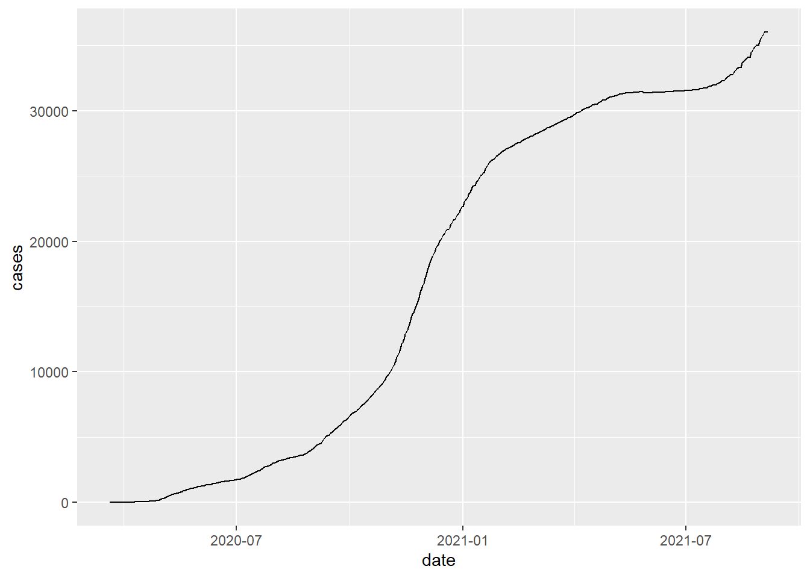
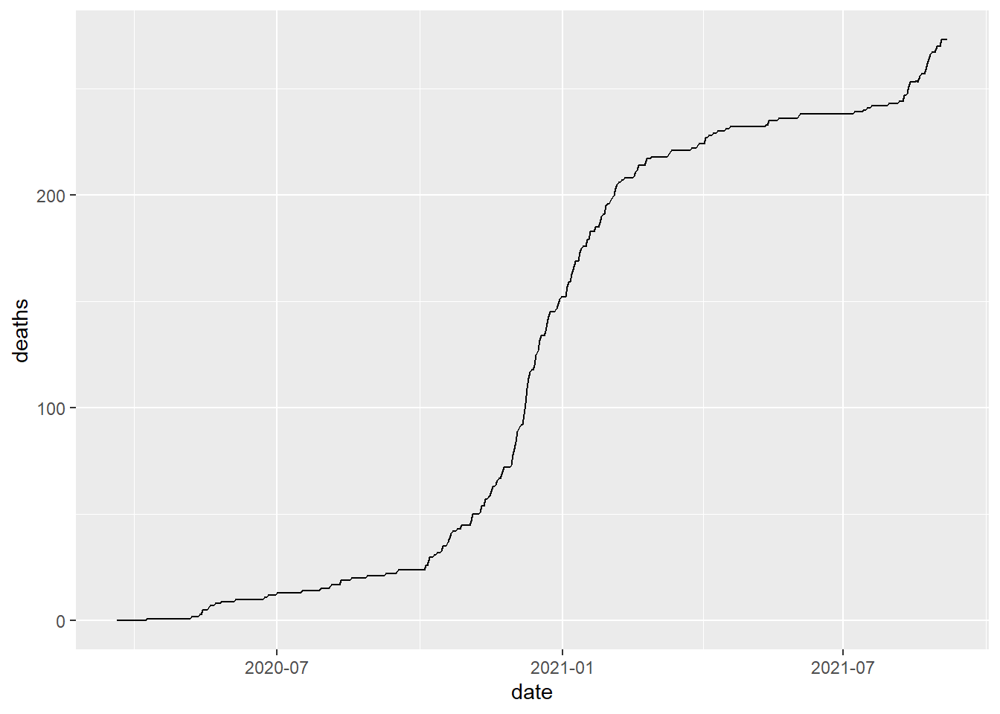

Chapter 11 Put it together: explore big data with data.table
The general form of data.table syntax is
DT[i, j, by]
where
- DT is a data.table.
- by: grouped by what?
- j: what to do?
- i: on which rows?
In general, we can tack expressions one after another, forming a chain of operations, i.e., DT[ … ][ … ][ … ].
The learning objectives is to
- Practice the data.table syntax to explore datasets on COVID-19:
- Two datasets will be used:
- COVID-19 new/cumulative cases on county level
- population of US counties in 2019
## Warning: package 'curl' was built under R version 4.0.5## Using libcurl 7.64.1 with Schannel## Warning: package 'lubridate' was built under R version 4.0.5##
## Attaching package: 'lubridate'## The following objects are masked from 'package:data.table':
##
## hour, isoweek, mday, minute, month, quarter, second, wday, week,
## yday, year## The following objects are masked from 'package:base':
##
## date, intersect, setdiff, union## Warning: package 'magrittr' was built under R version 4.0.511.1 Import the COVID-19 case data
The New York Times is releasing a series of data files with cumulative counts of coronavirus cases in the United States, at the state and county level, over time. We are compiling this time series data from state and local governments and health departments in an attempt to provide a complete record of the ongoing outbreak. The data is published on Github. We can download the csv data directly using fread().
# the data record the total confirmed cases and deaths for each county at each date.
covid_county=fread("https://raw.githubusercontent.com/nytimes/covid-19-data/master/us-counties.csv")
head(covid_county)## date county state fips cases deaths
## 1: 2020-01-21 Snohomish Washington 53061 1 0
## 2: 2020-01-22 Snohomish Washington 53061 1 0
## 3: 2020-01-23 Snohomish Washington 53061 1 0
## 4: 2020-01-24 Cook Illinois 17031 1 0
## 5: 2020-01-24 Snohomish Washington 53061 1 0
## 6: 2020-01-25 Orange California 6059 1 0## Classes 'data.table' and 'data.frame': 1693157 obs. of 6 variables:
## $ date : IDate, format: "2020-01-21" "2020-01-22" ...
## $ county: chr "Snohomish" "Snohomish" "Snohomish" "Cook" ...
## $ state : chr "Washington" "Washington" "Washington" "Illinois" ...
## $ fips : int 53061 53061 53061 17031 53061 6059 17031 53061 4013 6037 ...
## $ cases : int 1 1 1 1 1 1 1 1 1 1 ...
## $ deaths: int 0 0 0 0 0 0 0 0 0 0 ...
## - attr(*, ".internal.selfref")=<externalptr># add a column to define abbr for each state
covid_county[,state_abbr:=state.abb[match(state,state.name)]]
# Set order of column
setcolorder(covid_county, c("date", "state", "state_abbr","county","fips","cases","deaths"))
# change state name to lower case for consistency
covid_county[,state:=tolower(state)]
# illustrate the total cases and total death
covid_county[county=="Lancaster" & state_abbr=="NE",
.(date,cases)] %>% ggplot()+
geom_line(aes(date,cases))
covid_county[county=="Lancaster" & state_abbr=="NE",
.(date,deaths)] %>% ggplot()+
geom_line(aes(date,deaths))
# compute the daily new cases and new deaths
covid_county=covid_county[order(state,county,date)]
covid_county[ , confirmed_count := cases - shift(cases), by = .(state,county)]
covid_county[ , death_count := deaths - shift(deaths), by = .(state,county)]
covid_county[is.na(confirmed_count),confirmed_count:=cases][is.na(death_count),death_count:=deaths]
# save the data to local computer
fwrite(covid_county,"data/covid_county.csv")11.2 Selecting Rows and Columns
- Q1: What is the new confirmed cases in the Lancaster county, NE, on 2020-07-16?
## confirmed_count
## 1: 5011.3 Selecting Rows and Columns
- Q2: What is the new confirmed cases and death in the Lancaster county, NE, on 2020-07-16?
covid_county[county=="Lancaster" & state_abbr=="NE" &
date=="2020-07-16",
.(confirmed_count, death_count)]## confirmed_count death_count
## 1: 50 011.4 Computing on j
- Q3: What is the new confirmed cases in US on 2020-07-16?
## confirmed_count
## 1: 7570111.5 Computing on j
- Q4: What is the new confirmed cases for each state on 2020-07-16? Order the result in the descending order of cases count.
tmp=covid_county[date=="2020-07-16",
.(confirmed_count=sum(confirmed_count)),
by=.(state_abbr)][order(-confirmed_count)]
head(tmp)## state_abbr confirmed_count
## 1: TX 15038
## 2: FL 13965
## 3: CA 9264
## 4: AZ 3319
## 5: GA 2701
## 6: TN 231211.6 Computing on j
- Q5: What is the new confirmed cases and death for each state, on 2020-07-16? Order the result in the descending order of cases count.
tmp=covid_county[date=="2020-07-16",
.(confirmed_count=sum(confirmed_count),
death_count=sum(death_count)),
by=.(state_abbr)][order(-confirmed_count)]
head(tmp)## state_abbr confirmed_count death_count
## 1: TX 15038 154
## 2: FL 13965 156
## 3: CA 9264 122
## 4: AZ 3319 64
## 5: GA 2701 13
## 6: TN 2312 1411.7 Computing on j
- Q6: What is the new confirmed cases each day for the state of Nebraska?
tmp=covid_county[state_abbr=="NE",
.(confirmed_count=sum(confirmed_count)),
by=.(state_abbr,date)]
head(tmp)## state_abbr date confirmed_count
## 1: NE 2020-03-18 7
## 2: NE 2020-03-19 4
## 3: NE 2020-03-20 6
## 4: NE 2020-03-21 8
## 5: NE 2020-03-22 1
## 6: NE 2020-03-23 1111.8 Special symbol .N
- Q7: How many counties has new confirmed cases that is above 5000?
## [1] 270- Q8: What are these counties which has new confirmed cases that is above 5000 in a single day?
## state county date confirmed_count
## 1: arizona Maricopa 2020-12-01 8330
## 2: arizona Maricopa 2020-12-08 9701
## 3: arizona Maricopa 2020-12-14 6975
## 4: arizona Maricopa 2020-12-22 6088
## 5: arizona Maricopa 2020-12-28 6878
## 6: arizona Maricopa 2020-12-31 518111.9 Fitering rows through %between%
- Q9: How many county has daily new confirmed case between 1000 and 5000 for each day?
## date count
## 1: 2021-06-03 1
## 2: 2020-10-03 3
## 3: 2020-08-30 1
## 4: 2020-09-14 1
## 5: 2020-09-15 1
## 6: 2020-09-29 111.10 Fitering rows through %chin%
- Q10: How many new confirmed cases in each day for the top10 states together?
# find the top10 states in terms of total cases
covid_county[date=="2021-08-27",.(cases=sum(cases)), by=c("state","state_abbr")][order(-cases)][1:10]## state state_abbr cases
## 1: california CA 4396238
## 2: texas TX 3548371
## 3: florida FL 3179714
## 4: new york NY 2258143
## 5: illinois IL 1512387
## 6: georgia GA 1339537
## 7: pennsylvania PA 1288041
## 8: ohio OH 1202728
## 9: north carolina NC 1191456
## 10: new jersey NJ 1084546top10_states=covid_county[date=="2021-08-27",.(cases=sum(cases)), by=c("state","state_abbr")][order(-cases)][1:10]$state_abbr
top10_states=c("NY", "CA", "FL", "TX", "NJ", "IL", "MA",
"AZ", "GA", "PA")
# find how many confirmed cases each date for the top 10 state
tmp=covid_county[state_abbr%chin%top10_states,
.(confirmed=sum(cases)),
by=.(date)]
tail(tmp)## date confirmed
## 1: 2020-03-10 572
## 2: 2020-03-11 677
## 3: 2020-03-12 896
## 4: 2020-03-13 1179
## 5: 2020-01-25 2
## 6: 2020-01-24 111.11 uniqueN()
- Q11: How many counties has COVID-19 cases for each state?
## state_abbr county_cnt
## 1: AL 67
## 2: AK 28
## 3: AZ 16
## 4: AR 76
## 5: CA 59
## 6: CO 6511.12 Subset of Data: .SD[ ]
- Q12: for each day, find the top 3 counties in terms of the new confirmed cases.
tmp=covid_county[order(date,-confirmed_count)][
, .SD[1:3], by=.(date),
.SDcols=c("state_abbr","county",
"confirmed_count")]
tail(tmp)## date state_abbr county confirmed_count
## 1: 2021-09-05 NY New York City 3632
## 2: 2021-09-05 AZ Maricopa 2352
## 3: 2021-09-05 CA Los Angeles 2111
## 4: 2021-09-06 SC Greenville 1780
## 5: 2021-09-06 AZ Maricopa 1636
## 6: 2021-09-06 CA Los Angeles 153011.13 Subset of Data: .SD[ ]
- Q13: find the top 3 counties for each state in terms of the total confirmed cases.
tmp=covid_county[,.(confirmed=sum(confirmed_count)),
by=.(county,state_abbr)][
order(state_abbr,-confirmed)][, .SD[1:3],
by=.(state_abbr)]
head(tmp)## state_abbr county confirmed
## 1: AK Anchorage 38593
## 2: AK Matanuska-Susitna Borough 13904
## 3: AK Fairbanks North Star Borough 9298
## 4: AL Jefferson 104567
## 5: AL Mobile 65549
## 6: AL Madison 45548- Q13_extension: find the bottom 3 counties for each state in terms of the total confirmed cases.
11.14 Use := to Add/Update Columns By Reference
- Q14: Define a new variable death_rate, which equals to cumulative death divided by cumulative confirmed cases for each state
## date state state_abbr county fips cases deaths confirmed_count
## 1: 2020-03-24 arizona AZ Unknown NA 0 3 0
## 2: 2020-03-25 arizona AZ Unknown NA 0 3 0
## 3: 2020-03-26 arizona AZ Unknown NA 0 2 0
## 4: 2020-03-27 arizona AZ Unknown NA 0 4 0
## 5: 2020-03-28 arizona AZ Unknown NA 0 3 0
## 6: 2020-03-29 arizona AZ Unknown NA 0 5 0
## death_count deat_rate
## 1: 3 Inf
## 2: 0 Inf
## 3: -1 Inf
## 4: 2 Inf
## 5: -1 Inf
## 6: 2 Inf11.15 Join datasets
- Q15: Compute the infection_rate (percent of population infected at each county). We need to first compute the total cases for each county and add population information to it for computing the infection rate.
population2019=fread("data/population2019.csv")
tmp=covid_county[, .(cum_case=sum(confirmed_count)),
by=.(state_abbr, state, county)]
tmp1=merge(tmp, population2019, by.x=c("state","county"),
by.y = c("state_name","county_name"),
all.x = TRUE)
tmp2=tmp1[,infection_rate:=cum_case/population19][,-c("state")][
order(-infection_rate)]
head(tmp2)## county state_abbr cum_case population19 infection_rate
## 1: Chattahoochee GA 5109 10907 0.4684148
## 2: Crowley CO 2236 6061 0.3689160
## 3: Dimmit TX 3567 10124 0.3523311
## 4: Bent CO 1566 5577 0.2807961
## 5: Lincoln AR 3572 13024 0.2742629
## 6: Dewey SD 1591 5892 0.270027211.16 Additional Exercises:
- Q16: what is the total death in each state?
- Q17: Which county in Nebraska has the highest total confirmed cases?
11.17 Summary
- Congratulation! You have mastered the skills to manipulate big data for insights using data.table.
- It is very likely you will forget the codes for manipulating data.
- Do not try to memorize the code; memorize the scenarios in which the code is used; develop a code library for these scenarios.
- We will later learn to combine data manipulation and visualization.